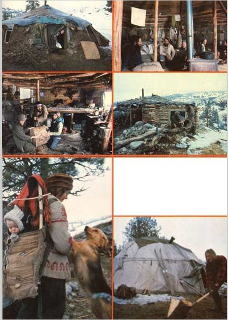

TOP, LEFT: Song Feather in the doorway of her snug, earth-banked lodge. ABOVE LEFT: some of the boys have gathered inside Buffalo and Moonstone's hogan to make a drum. Note how light and airy this ""primitive"" house is... and you can't beat the price! ABOVE, RIGHT: Here's what Buffalo's hogan looks like from the outside. Except for the black plastic, this earthen lodge could have been built two thousand years ago. LEFT: The Moonstone, her baby, and her dog. The Flowering Tree ""tribe"", obviously, follows many of the customs of the native peoples of this continent. BELOW: Blackjack splits wood outside his wickiip. Note that a wickiup isn't as well insulated as an earth-banked lodge... but that it is easier and quicker to build and far more portable than the more permanent hogan.